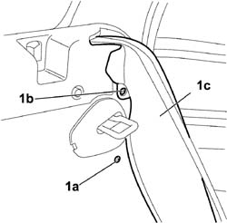
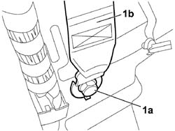
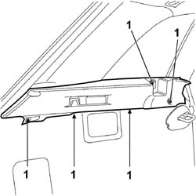

7040B24 LOAD COMPARTMENT TOP TRIM (ONE) - R+R
- Path
- Procedures > 70 FITTINGS > 7040 BODY INTERIOR FITTINGS AND TRIM > 7040B LUGGAGE COMPARTMENT AND LOAD PLATFORM TRIMS > 7040B24 LOAD COMPARTMENT TOP TRIM (ONE) - R+R
- Kind
- repair procedure (removal / refitting; the operation number is the code)
- Applies to
- all engines; all production periods
- Interactive page
- https://sloeber94.github.io/elrnDB-fCrm/en/#/194001036
Applies to: all engines; all production periods
 Removing
Removing
 Refitting
Refitting- Open the rear tailgate.
- Turn the ignition key to the OFF position.
- Disconnect the negative and positive battery terminals.
Description | Connector | |
|---|---|---|
BATTERY |
Op. 7040B42 PROTECTION GRILLE FOR ANIMAL TRANSPORT - R and R
Op. 7040B26 LOAD PLATFORM COVER BLIND - R+R
Op. 7040G46 LOAD COMPARTMENT COURTESY LIGHT - R and R
Op. 7050A20 ONE-PIECE REAR SEAT CUSHION - R.R.
- Lower the rear seat backrest.
1. Working on the side of the vehicle concerned, undo the fixing bolts (1a) and (1b) and carefully detach the electrical connections for the Side Bag modules and the side panels (1c) from the rear seat without disconnecting them.

Applies to: all engines; all production periods
1. Undo the bolt (1a) for the lower end of the rear seat belt (1b) from the bodyshell.

Applies to: all engines; all production periods
1. Undo the bolt fixing the upper trim and remove it from its housing, releasing it from the seat belt released previously from the bodyshell.

Applies to: all engines; all production periods
Description | Connector | |
|---|---|---|
REAR AIR BAG DEACTIVATION |
Applies to: all engines; all production periods
Refitting
Removing- Check that the load carrying compartment upper trim is not damaged.
- If work has been carried out on the right side of the vehicle, connect the electrical connection for the rear side Air Bag disabling switch.
Description | Connector | |
|---|---|---|
REAR AIR BAG DEACTIVATION |
- Introduce the seat belt via the special slot in the upper trim.
- Position the upper trim correctly in the load carrying compartment and tighten the fixing bolts.
Op. 7040G46 LOAD COMPARTMENT COURTESY LIGHT - R and R
Tighten the fixing bolt securing the lower end of the rear seat belt to the bodyshell to the recommended torque.
Component | Fastening | dia | Value (daNm) | Validity |
|---|---|---|---|---|
BRACKET ON WHEEL ARCH | Bolt | M10x1.25 | 3,6 ÷ 4,4 |
- Carefully place the side panels in their housing and tighten the fixing bolts.
Op. 7050A20 ONE-PIECE REAR SEAT CUSHION - R.R.
- Raise the rear seat backrest.
Op. 7040B26 LOAD PLATFORM COVER BLIND - R+R
- For versions with a protective pet grille, carry out the following operation.
Op. 7040B42 PROTECTION GRILLE FOR ANIMAL TRANSPORT - R and R
- Connect the negative and positive battery terminals.
Description | Connector | |
|---|---|---|
BATTERY |
- Close the rear tailgate.
Topics linked from this page (6)
- 7040B26 LOAD PLATFORM COVER BLIND - R+R
- 7040B42 <x>PROTECTION GRILLE FOR ANIMAL TRANSPORT - R&R</x>
- 7040G46 <x>LOAD COMPARTMENT COURTESY LIGHT - R&R</x>
- 7050A20 ONE-PIECE REAR SEAT CUSHION - R.R.
- A001 BATTERY
- H076 REAR AIR BAG DEACTIVATION
Topics that link to this page (9)
- 5505C41 PASSENGER COMPARTMENT WIRING - R.R
- 5570T70 PAGER/COMPACT DISC WIRING HARNESS - R&R OR REPLACE
- 5570T95 SUBWOOFER WITH AMPLIFIER BUILT INTO SOUND SYSTEM - R.R.
- 5580H10 PARKING OBSTACLE DETECTION DEVICE ELECTRONIC CONTROL UNIT - R.R.
- 7040B18 LOAD COMPARTMENT LOAD PLATFORM SIDE TRIM ONE LH OR RH - R.R
- 7040H42 REAR PILLAR TRIM (ONE), LEFT OR RIGHT- R.R
- 7065B08 REAR SEAT BELT (ONE) WITH PRETENSIONER ON REEL, LEFT OR RIGHT - R.R.
- 7210B82 R.R REAR CROSSMEMBER
- 7210E66 R.R. REAR BUMPER